Callout
Picture a stereotypical chemist at work. There are probably several bottles and jars of mysterious liquids in your mental image. It might be a stereotype, but a great deal of chemistry does take place in aqueous solutions.
This is partly because water is cheap and easily accessible. It is also good at dissolving many substances that it comes in contact with. Chemicals mix more completely when they are dissolved, resulting in faster reactions. Allowing reactions to occur in solution also makes it easier to control how quickly the reactions occur.
Being able to predict the quantity of product or the quantity of reactants required is critical to the success of a chemical process.
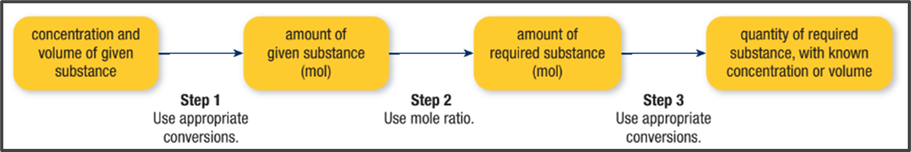
Solving Stoichiometry Problems Involving Solutions
Sample Problem: Determining Volume to Precipitate a Compound
Determine the minimum volume of 0.42 mol/L sodium sulfate, Na2SO4(aq), that is required to react completely with all the barium ions in 500.0 mL of a 0.100 mol/L barium chloride, BaCl2, solution.
Identify the given value(s):
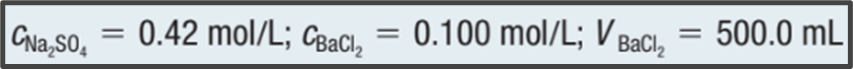
Identify the required value(s):
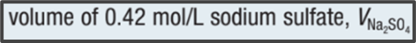
Analysis:
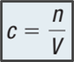
Callout
Step 1: Convert all volumes of the solutions to liters, if necessary.
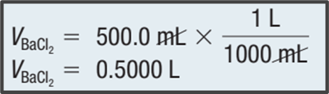
Callout
Step 2: Write a balanced equation for the reaction, listing the given value(s), required value(s), and amount concentrations below the substances being considered in the problem.
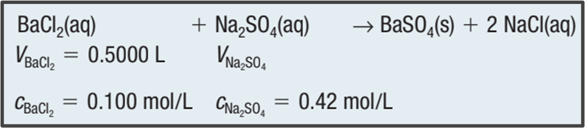
Callout
Step 3: Rearrange the concentration equation to solve for the amount of barium chloride.
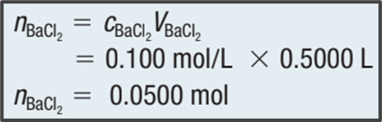
Callout
Step 4: Determine the amount of the substance whose volume is required from the amount of the substance whose volume and concentration are given.
To do this, multiply the amount calculated in Step 3 by a suitable conversion factor derived from the mole ratio in the balanced equation. In this case, the conversion factor is either:
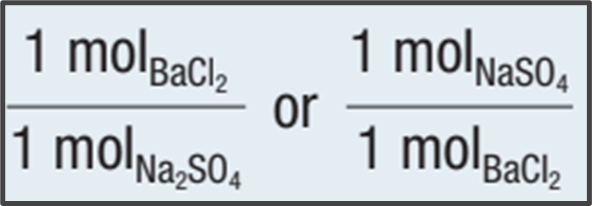
Callout
Since we are determining the amount of Na2SO4 from the amount of BaCl2, we use the conversion factor:
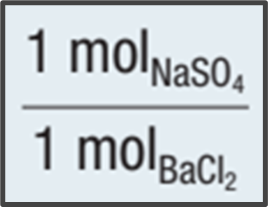
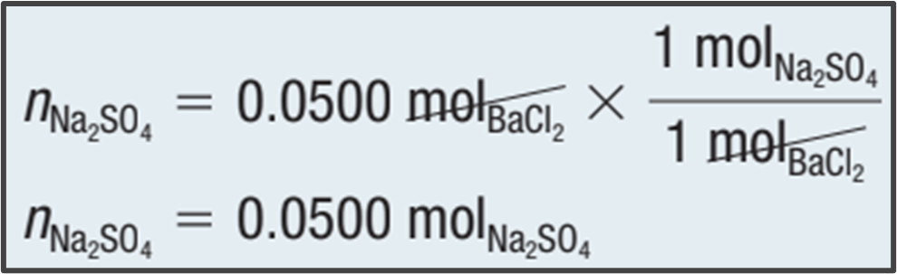
Callout
Step 5: Determine the volume of the substance whose volume is required by rearranging the amount concentration equation and substituting the values determined in Steps 2 and 4.
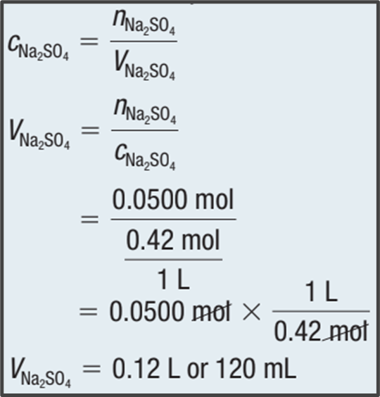
Callout
Statement: The minimum volume of 0.42 mol/L sodium sulfate required to react with 500.0 mL of 0.100 mol/L of a barium chloride solution is 120 mL.